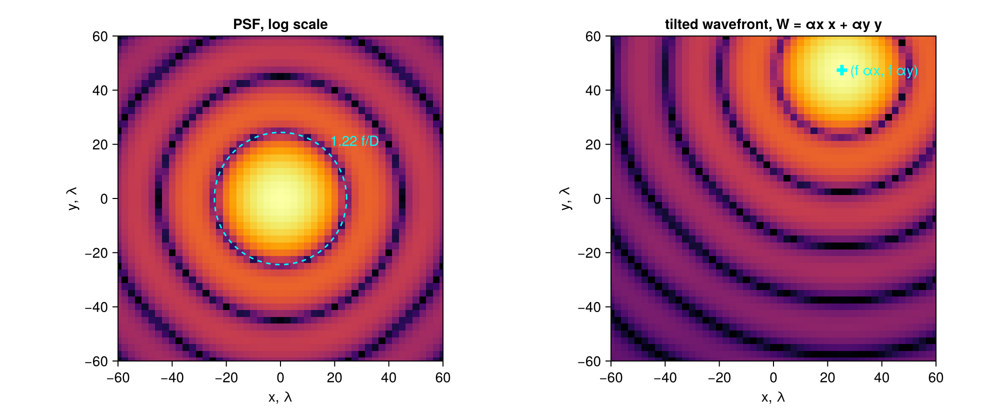
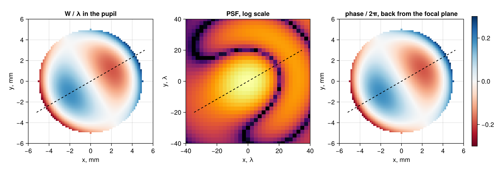

using SampledDomains
using CairoMakie
using FFTW
CairoMakie.activate!(; type="png")PSF in wavelengths
The PSF of a lens is the squared modulus of the Fourier transform of the field in its pupil. This page computes it with an FFT, finds the coordinates of the focal plane from the Fourier-dual domain, and gives them in wavelengths, x/λ: the numbers become dimensionless and of the order of the PSF size. Two checks: the first dark ring of the Airy pattern, and the direction in which a tilt of the wavefront moves the PSF.
The pupil
A lens of diameter D = 10 mm and focal length f = 200 mm, light of λ = 0.633 μm. The pupil is sampled with 64 pixels across the diameter, on a grid 8 times larger than the pupil (the zero padding sets the sampling of the focal plane). The origin is the pixel of the zero frequency of fftshift, so that the centre of the pupil goes to the first element of the array with ifftshift.
D, f, λ = 10.0, 200.0, 0.633e-3 # mm
n = 512
pupil = imagedomain((n, n); pixelsize=D / 64, origin=:fftcenter, units=:mm)512×512 CartesianDomain2D{Float64} with points (x, y):
x: -40.0:0.15625:39.84375
y: 40.0:-0.15625:-39.84375
units=mmaperture = map(p -> hypot(p.x, p.y) <= D / 2, pupil)
psf(field) = abs2.(fftshift(fft(ifftshift(field))))
I0 = psf(complex.(aperture))
I0 ./= maximum(I0);The focal plane
The fftshifted FFT of an array on pupil is an array on the dual domain, the grid of the spatial frequencies, in mm⁻¹. Its orientation is that of the pupil: y up.
ν = dualDomain(pupil)512×512 CartesianDomain2D{Float64} with points (x, y):
x: -3.2:0.0125:3.1875
y: 3.2:-0.0125:-3.1875
units=mm⁻¹A spatial frequency ν of the pupil field arrives in the focal plane at x = λ f ν. Multiplying by a number drops the units, so they are declared again; then the coordinates are converted to wavelengths:
focal = setunits(ν * (λ * f), :mm)
focalλ = inwavelengths(focal, λ)512×512 CartesianDomain2D{Float64} with points (x, y):
x: -640.0:2.5:637.5
y: 640.0:-2.5:-637.5
units=λ (λ = 633.0 nm)In wavelengths, the first dark ring of the Airy pattern has the radius 1.22 f/D:
r1 = 1.22 * f / D24.4A tilt of the wavefront
A wavefront tilted by small angles αx to the right and αy upward, W(x, y) = αx x + αy y (the optical path grows with x and y), is a plane wave going to the right and up; the field in the pupil is exp(2πi W/λ). The PSF moves to (f αx, f αy) in the focal plane. The two angles differ, so that an interchange of x and y, or a reflection of either, would be seen. With αx = 0.8 × 10⁻⁴ and αy = 1.5 × 10⁻⁴ the shift is (16, 30) μm:
αx, αy = 0.8e-4, 1.5e-4
W = map(p -> αx * p.x + αy * p.y, pupil)
I1 = psf(aperture .* cis.(2π .* W ./ λ))
I1 ./= maximum(I1)
expected = (f * αx / λ, f * αy / λ) # in wavelengths(25.276461295418642, 47.39336492890995)fig = Figure(; size=(1000, 420))
lims = (-60, 60, -60, 60)
log10I(I) = log10.(I .+ 1e-5)
ax1 = Axis(fig[1, 1]; title="PSF, log scale", aspect=DataAspect(), limits=lims,
axislabels(focalλ)...)
heatmap!(ax1, focalλ, log10I(I0); colormap=:inferno, colorrange=(-5, 0))
arc!(ax1, Point2f(0, 0), r1, 0, 2π; color=:cyan, linestyle=:dash)
text!(ax1, r1 * 0.75, r1 * 0.75; text="1.22 f/D", color=:cyan, align=(:left, :bottom))
ax2 = Axis(fig[1, 2]; title="tilted wavefront, W = αx x + αy y", aspect=DataAspect(), limits=lims,
axislabels(focalλ)...)
heatmap!(ax2, focalλ, log10I(I1); colormap=:inferno, colorrange=(-5, 0))
scatter!(ax2, [Point2f(expected...)]; color=:cyan, marker=:cross, markersize=14)
text!(ax2, expected[1] + 3, expected[2]; text="(f αx, f αy)", color=:cyan, align=(:left, :center))
fig
The dashed circle at 1.22 f/D lies on the first dark ring, and the tilted PSF is centred at (f αx, f αy), to the right and above, as the plane wave goes. Both are checked numerically: the minimum of the intensity along the positive x axis near the ring, and the centroid of the tilted PSF.
row0 = findfirst(==(0.0), focalλ.yrange) # the row y = 0
xs = focalλ.xrange
near = findall(x -> 0.8r1 < x < 1.2r1, xs)
xmin = xs[near[argmin(I0[row0, near])]]
# the centroid within the first dark ring around the maximum (the far tails are periodic)
pmax = focalλ[argmax(I1)]
ring = [hypot((p - pmax)...) < r1 for p in focalλ]
centroid = sum(p * I for (p, I, k) in zip(focalλ, I1, ring) if k) / sum(I1[ring])
(xmin, r1), (centroid, expected)((25.0, 24.4), ([25.276613727618276, 47.39330600791317], (25.276461295418642, 47.39336492890995)))@assert abs(xmin - r1) < 2step(xs) && all(abs.(centroid .- expected) .< 0.2)The direction of the shift depends on the sign conventions of optics (here the field exp(2πi W/λ), a wave exp(i(kz - ωt)), and the forward FFT for the propagation to the focal plane); the domains only make sure that x and y in the pupil and in the focal plane are the same directions as in the images of the setup.
Coma, and the way back to the pupil
A light coma, written by hand: W = A (3ρ³ - 2ρ) cos(θ - θ₀) in the pupil, with ρ the radius in units of D/2 and θ the polar angle from the x axis, amplitude A = 0.3 λ, turned by θ₀ = 30° so that any reflection or interchange of the axes would be seen.
A, θ0 = 0.3λ, deg2rad(30)
function coma(p)
ρ = hypot(p.x, p.y) / (D / 2)
return ρ <= 1 ? A * (3ρ^3 - 2ρ) * cos(atan(p.y, p.x) - θ0) : 0.0
end
Wc = map(coma, pupil)
field = aperture .* cis.(2π .* Wc ./ λ)
E = fftshift(fft(ifftshift(field))) # the field in the focal plane, on ν
I2 = abs2.(E) ./ maximum(abs2, E);The inverse FFT of the focal field gives the pupil field back. Its grid is the dual of the dual domain: the steps, the origin at the pixel of the zero frequency, the orientation (y up) and the units (mm⁻¹ → mm) all come back to those of pupil:
back = fftshift(ifft(ifftshift(E)))
pupil2 = dualDomain(ν)512×512 CartesianDomain2D{Float64} with points (x, y):
x: -40.0:0.15625:39.84375
y: 40.0:-0.15625:-39.84375
units=mmpupil2 ≈ pupil, units(pupil2) == units(pupil), back ≈ field(true, true, true)@assert pupil2 ≈ pupil && units(pupil2) == units(pupil) && back ≈ fieldThe phase of the pupil, the PSF, and the phase recovered from the focal field, each on its own domain. The direction θ₀ = 30° (dashed) is the same in the three pictures: in the pupil the phase is largest at the edge along it, and the tail of the comatic PSF lies along the same line.
phase(w) = ifelse.(aperture, w, NaN)
lp = (-0.6D, 0.6D, -0.6D, 0.6D)
fig = Figure(; size=(1100, 380))
ax1 = Axis(fig[1, 1]; title="W / λ in the pupil", aspect=DataAspect(), limits=lp,
axislabels(pupil)...)
hm = heatmap!(ax1, pupil, phase(Wc ./ λ); colormap=:RdBu, colorrange=(-0.3, 0.3))
ax2 = Axis(fig[1, 2]; title="PSF, log scale", aspect=DataAspect(), limits=(-40, 40, -40, 40),
axislabels(focalλ)...)
heatmap!(ax2, focalλ, log10I(I2); colormap=:inferno, colorrange=(-4, 0))
ax3 = Axis(fig[1, 3]; title="phase / 2π, back from the focal plane", aspect=DataAspect(),
limits=lp, axislabels(pupil2)...)
heatmap!(ax3, pupil2, phase(angle.(back) ./ 2π); colormap=:RdBu, colorrange=(-0.3, 0.3))
Colorbar(fig[1, 4], hm)
for (ax, r) in ((ax1, 0.6D), (ax2, 40), (ax3, 0.6D))
lines!(ax, [Point2f(-r * cos(θ0), -r * sin(θ0)), Point2f(r * cos(θ0), r * sin(θ0))];
color=:black, linestyle=:dash)
end
fig
This page was generated using Literate.jl.